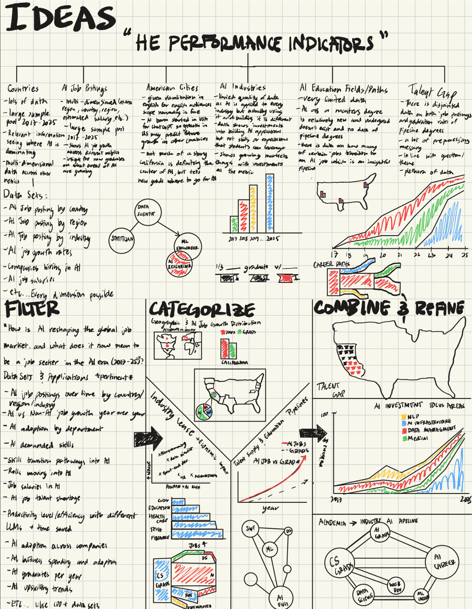
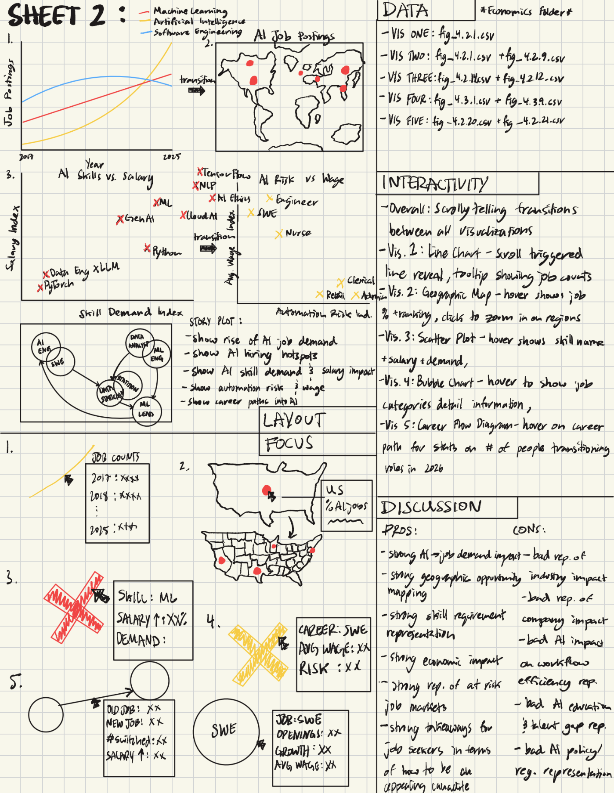
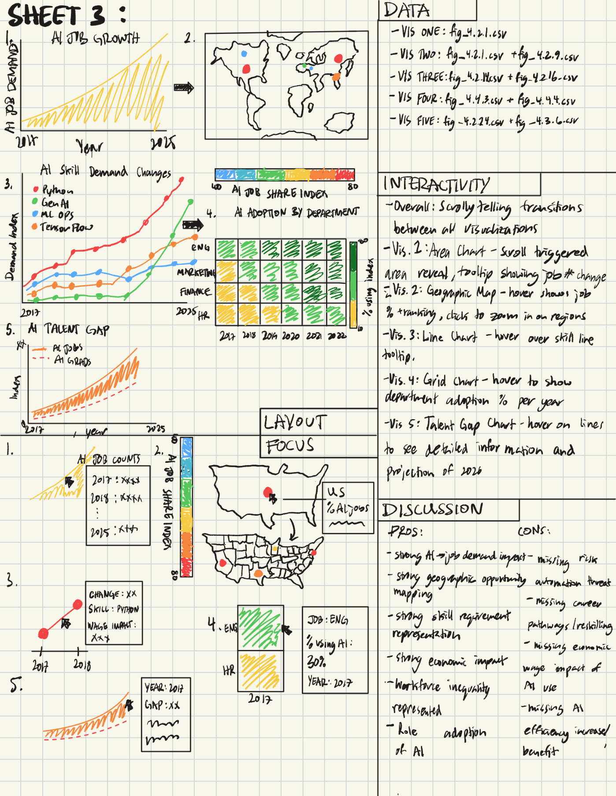

Names: Jonas Schwab & Matt Grossman
Emails: j.g.schwab@wustl.edu; grossman.m@wustl.edu
UIDs: 509002; 508495
Repo Link: here
AI is reshaping the global economy around itself at breakneck speed. As soon-to-be new grads, we are acutely aware of how AI has the possibility to upend the economy and job market, replacing entry-level jobs faster than we are able to adapt to this new reality.
We aim to give users a holistic view into how AI is changing the job market and economy for job-seekers.
We aim to provide insight into what AI skills are becoming an expectation in the workforce, in order to help individuals understand what active learning they should be doing to make themselves more attractive candidates.
We aim to provide insight on different scales (global, country) on where AI is growing and how it is impacting the surrounding areas in terms of job availability.
We aim to tell a story on how AI has grown in the last year.
What does it mean to be looking for a job in the AI Era? Tell that story.
We will be using the Stanford AI Index Dataset. Each year since 2017, the Stanford Human-Centered AI Institute releases the AI Index.
The dataset is released each year from 2017-2025 and the amount of data collected has grown each year. Our main processing task will be to synthesize the entire dataset (currently separated by years and not time-series) into time-series data to show how AI trends have shifted over the last 8 years.
The jobs data that we want to focus on is mostly collected between 2023-2025. As AI evolves so quickly, we will be able to show the beginning of trends with these 3 years of data rather than showing a complete picture over many, many years.
Much of the data is already relatively clean so there will be minimal work on that end.
Sketches go here.
  | Date | Matt Goals | Jonas Goals | Overall Goals |
|---|---|---|---|
| October 27 | EDA Brainstorm sheet and 2 visualization proposal sheets. Decide what nice-to-have features we need. |
EDA Brainstorm sheet and 2 visualization proposal sheets. |
HTML Project Proposal Complete: - Convert documents and designs into HTML - Complete Schedule with personal goals - Complete half of the 5-sheet design methodology and pick a favorite as the final design. |
| October 27th - Final Project Proposal | |||
| November 3 | EDA continued Come up with 5 interesting insights/visualizations from the data |
Clean up data and figure out how to compile multiple datasets for chronological visualizations across
multiple years. EDA continued Come up with 5 interesting insights/visualizations from the data [python]. |
Data processed and cleaned. Exploratory data analysis to begin to put together a data story. |
| November 10 | Organize insights into a clear narrative story Convert half of our visualizations into d3. |
Put narrative story with static visualizations into a scrollable page Convert half of our visualizations into d3. |
Storytelling and visualizations (static) with writing/framing |
| November 10th - Milestone 1 | |||
| November 17 | TBD | TBD | Implemented scrollable, interactive visualizations. |
| November 24 | TBD | TBD | Implemented animations and interactivity |
| November 24th - Milestone 2 | |||
| December 4 | TBD | TBD | Implemented feedback from milestone 2; clean up visual design; nitpicking. Add anything missing from the project to the process book. |
| December 4th - Final Presentation | |||
| December 9 | TBD | TBD | Our goal is to have the project done by December 4 but if we need to make edits that can be done in this week. |
| December 9th - Final Submission | |||